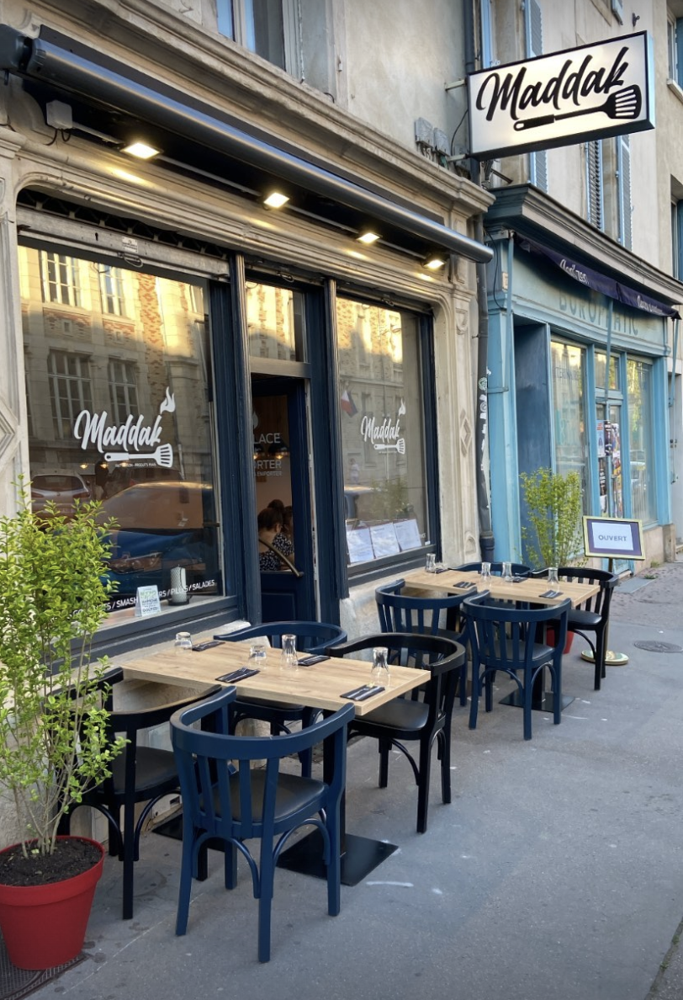
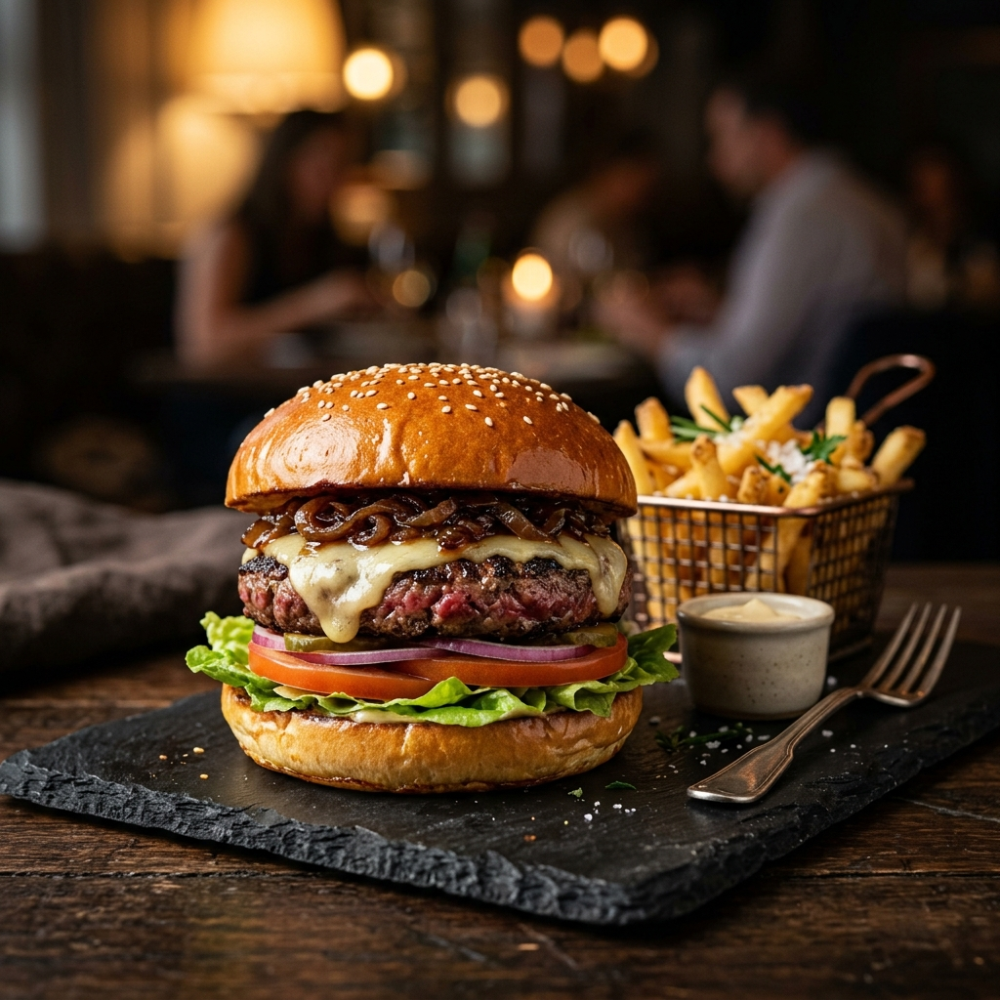
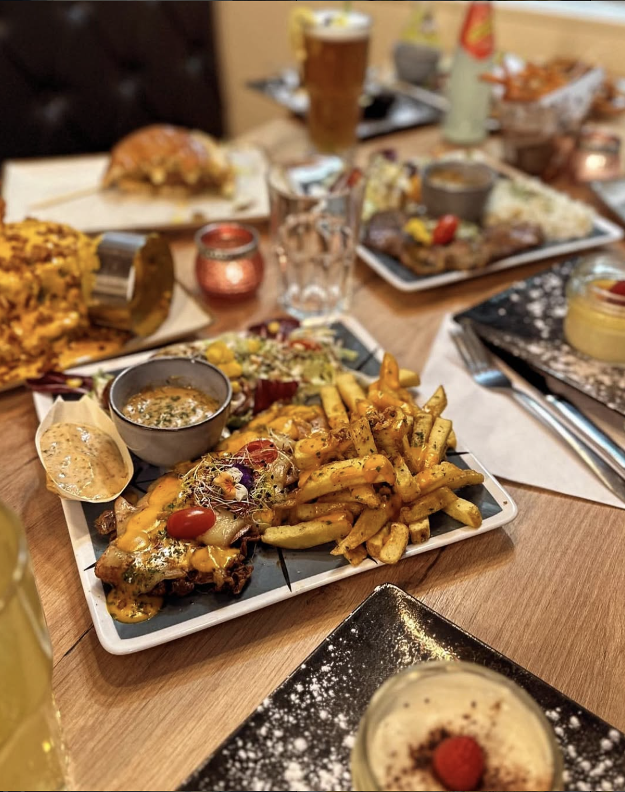
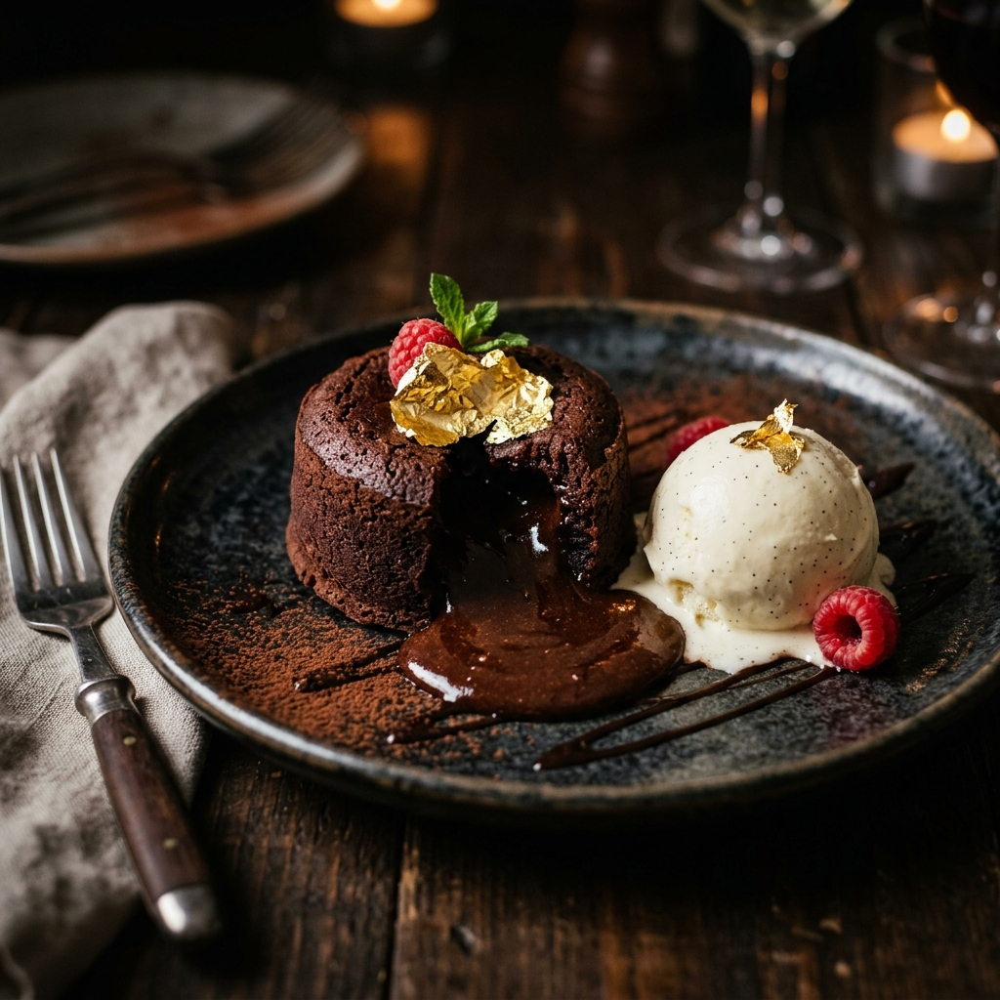

Smash Burgers
Double Cheese et Bacon
Double steak smashé, cheddar fondu, bacon croustillant, frites maison
à partir de 9,90 €
Restaurant — Nancy
Fait Maison · Produits Frais
Une cuisine généreuse et sincère, préparée chaque jour avec des produits sélectionnés. Au cœur de Nancy, à deux pas de la Pépinière.


Née d'une passion transmise de génération en génération, l'aventure Maddak a pris racine à deux pas du magnifique parc de la Pépinière, au cœur de Nancy. Un lieu où l'on cuisine comme à la maison — avec cœur, sans compromis.
Nos burgers sont préparés avec des pains Farine Label Rouge, notre viande hachée est fraîche et 100% française, et chaque sauce est cuisinée maison. Une cuisine sincère qui parle avant tout.
Que vous soyez seul au comptoir, en famille ou entre amis, Maddak vous accueille dans un espace chaleureux où la bonne table rime avec convivialité.
Double steak smashé, cheddar fondu, bacon croustillant, frites maison
à partir de 9,90 €Pain Label Rouge, double steak frais, sauce Maddak exclusive
à partir de 13,90 €Veau tendre mariné, grillé à la plancha, accompagnements maison
à partir de 15,90 €
Cœur coulant, glace vanille, feuille d'or
à partir de 5,90 €